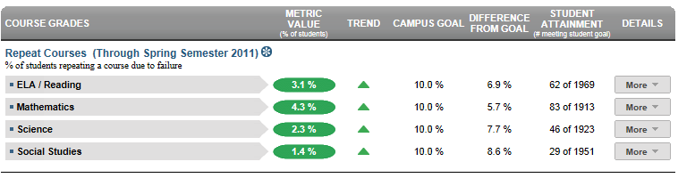

Dashboard Metrics


Repeat Courses
Background
District Dashboard Metrics
Because of the need to closely monitor course performance, many school districts across the nation, including Chicago, Dallas and New York, have incorporated metrics on course performance and associated credit accumulation into their internal performance management dashboards. During focus groups conducted with educators, the Repeat Courses metric was considered useful by 94% of those surveyed.
Primary Metric
- Repeat Courses: percent of students repeating a course due to course failure.
Related Metrics
- Class Grades Below C Level: percent of students with 1, 2 and 3 or more course grades below C for the most recent grading period.
- Falling Class Grade: percent of students with a core course grade, as of the most recent grading period, that dropped 10% or more from the grading period prior to the most recent.
- Credit Accumulation: percent of students in the tenth, eleventh and twelfth grades earning the required number of credits under the Recommended graduation plan (26 total credits before graduation) as of the end of the most recent grading period.
- On Track to Graduate: percent of students in the tenth, eleventh and twelfth grades who are on track to meet the 4x4 graduation requirements of earning one credit per year in each of the four core subjects, based on courses completed as of the prior year.
User Interface
Dashboard Example
Figure 1 shows the Repeat Courses metric as seen on the district dashboard.

Figure 1 Ed-Fi Repeat Courses Metric
Visibility Rules
The metric is grayed out if prior course grades are not loaded.
Status Definition
The Status metric displays the percentage of students who are currently taking a course (in core subjects) that they previously failed. "Failed" is defined as less than 70 for numeric grading systems, or equal to D or F for letter grading systems.
The Status indicator is determined by district goals. The Ed-Fi default threshold is configurable and has a default value of 5% of students repeating failed courses.
| Metric Status Indicator | |||
Metric Name | Sub-metric Name | Metric Status Indicator | Campus Goal (Delta) |
Repeat Courses | ELA/Reading | Red (Percentage) = if percentage of students who are currently taking a course they previously failed is greater than or equal to district goal Green (Percentage) = if percentage of students who are currently taking a course they previously failed is less than district goal | District Goal and the calculated percentage of students repeating a course |
Mathematics | Red (Percentage) = if percentage of students who are currently taking a course they previously failed is greater than or equal to district goal Green (Percentage) = if percentage of students who are currently taking a course they previously failed is less than district goal | District Goal and the calculated percentage of students repeating a course | |
Science | Red (Percentage) = if percentage of students who are currently taking a course they previously failed is greater than or equal to district goal Green (Percentage) = if percentage of students who are currently taking a course they previously failed is less than district goal | District Goal and the calculated percentage of students repeating a course | |
Social Studies | Red (Percentage) = if percentage of students who are currently taking a course they previously failed is greater than or equal to district goal Green (Percentage) = if percentage of students who are currently taking a course they previously failed is less than district goal | District Goal and the calculated percentage of students repeating a course | |
(a) The Value column displays the number of students repeating a course they previously failed out of the total number of students.
Trend Definition
Trend Indicators: Objective is to indicate Repeat Courses | |||
| Up green |
| If the value for the current time frame is more than 5 percentage points higher than the prior time frame, then display a gray arrow trending upward. |
| Unchanged | If the value for the current time frame is less than or equal to 5 percentage points higher or less than or equal to 5 percentage points lower, then display two gray arrows pointing outward indicating no direction. | |
| Down red | If the value for the current time frame is more than 5 percentage points lower than the prior time frame, then display a gray arrow trending downward. | |


The trend does not show for the first occurrence of a time frame since data is not available.
Delta Definition
The Delta column is the absolute value of the difference between the campus percentage (Status column) and the district goal (District Goal column).
Delta Indicators: Objective is to indicate Repeated Courses | |||
Metric Name | Sub-Metric Name | District Goal | Delta |
Repeat Courses | ELA/Reading | Set district goal | Red (Delta Percentage) = if the students repeating previously failed courses is greater than or equal to the district goal Black (Delta Percentage) = if the students repeating previously failed courses is less than the district goal |
Mathematics | Set district goal | Red (Delta Percentage) = if the students repeating previously failed courses is greater than or equal to the district goal Black (Delta Percentage) = if the students repeating previously failed courses is less than the district goal | |
Science | Set district goal | Red (Delta Percentage) = if the students repeating previously failed courses is greater than or equal to the district goal Black (Delta Percentage) = if the students repeating previously failed courses is less than the district goal | |
Social Studies | Set district goal | Red (Delta Percentage) = if the students repeating previously failed courses is greater than or equal to the district goal Black (Delta Percentage) = if the students repeating previously failed courses is less than the district goal | |
Periodicity
The data is most actionable when loaded at the end of each grading period after grades are posted. Grading periods vary by state and district. In the state, grading periods are typically 6 or 9 weeks.
Recommended Load Characteristics | |
Calendar | Throughout the school year |
Frequency of data load | Once each grading period |
Latency | 6-9 weeks |
Interchange schema | Interchange-StudentGrade.xsd |
Tooltips
The standard tool tips for the metric definition, column headers, and help functions display for this metric.
Business Rules
The Repeat Courses metric displays the percentage of current students who are currently taking a course that they failed in a prior year (not necessarily the previous year).
The “failing” grade is a configurable variable with the default value set to less than 70 for numeric grading systems, or equal to D or F for letter grading systems.
The length of the grading period is configurable and is defined by the district—typically either 6 or 9 weeks.
Data Assumptions
- Current student enrollment in classes for the current year is available.
- Student transcript data from previous years is available.
- Course grades are numeric or letter-based.
- District has set the preferred value that drives the campus goals.
Computed Values
The cohort is the set of current students for whom the enrollment in classes for the current year have been loaded for the last reported grading period. The cohort includes students of all grades at all middle and high school campuses. The cohort excludes transfer students (late enrollment) for whom a prior years’ academic transcript is not available.
Table 6 defines how values on the campus dashboard are calculated. The result of the calculation displays in the Status column on the dashboard.
| Metric | Calculation |
Repeat Courses | (Number of students in cohort who for one or more current courses has previously failed the same course) * 100 / (Total number of current students – students with missing or incomplete transcript) |
Data Anomalies
Footnotes
An icon appears next to any metric where students have been excluded. When the user hovers over the icon, count of students who have been excluded appear in a tooltip with the reason(s) for exclusion. By clicking on the icon, the data administrator will link to the data administrator’s page for more detail.
Best practice is to exclude and footnote students based on the following criteria:
- Missing data
Date of Refresh
Best practice is for the date of last data refresh to appear next the metric in the following format:
- (Through Third Grading Period)
Implementation Considerations
Student Identity
Maintaining a correct and consistent student identity is at the center of any education data system. Most systems use some sort of unique identifier. However, sometimes this identifier is entered incorrectly or sometimes different systems use different identifiers.
The UDM XML supports the interchange of multiple types of identifiers. The StudentReference is a complex type within the UDM to maintain the referential integrity of the student (that is, ensuring that the data associated with each student is accurately associated with the right student). The complex type of the student reference assists with implementing the accurate matching algorithm to identify a student by utilizing any of the individual attributes (e.g., Student Unique State ID, Student ID, Campus Local ID (with Campus ID), Name and Birth Date). For example, if the Student Unique State ID is unknown, you can find the student’s identity by their Student ID, First Name, Last Name and Birth Date.
Late Enrollments or Missing Transcript Information
Students with incomplete data in their course transcript from previous years may not be accurately represented.
Numeric or Letter Grading System
Best practice is for the metric to support both numeric and letter grading systems.
Campus Goals
Best practice is to set the goals for each campus at the district level. A secure mechanism is required to allow the district to set and maintain those goals.
Aggregate Metric Inclusions and Exclusions of Special Education Students
Each campus's aggregate metrics may include or exclude the special education population, depending on the intended purpose for a specific metric and campus goal. This may affect the district metric.
Drill Downs
Drill Down Views
The dashboards include the option to see more detail that is associated with a specific metric. Table 7 lists the drill down views that are recommended for this metric.
| Campus List | List of all campuses and whether or not they are meeting their campus goal |